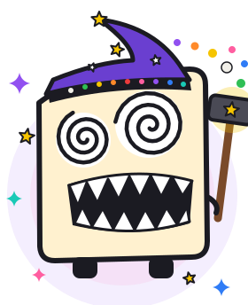
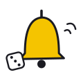
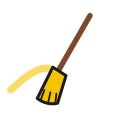
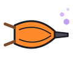
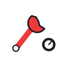

a little workshop of custom firmware for CHOMPI. the first thing out of it is Choowi.

every release is a magic tool Choowi forges, in the next colour of CHOMPI's panel lights.

Wake-up Bell0.17
Sweep Brush0.17.1
Dream Bellows0.18
Tinker Wrench0.19choowi-0.20.0-rc3-card.zip (release candidate): the firmware, Choowi's sounds and the manual.jammi_*, cubbi_*) and every file with .bin in the name.want stock TAPE back? put your backup back on the card. the zip's NOTICES.txt has the licences.